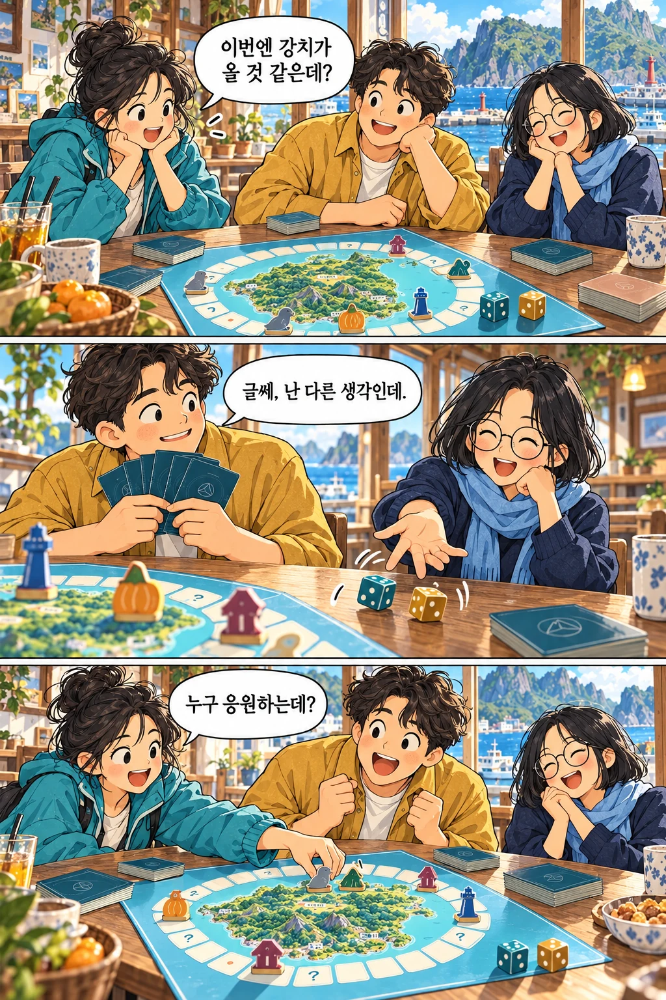

테이블 위의 작은 눈치 싸움
같은 테이블,
서로 다른 속마음.
강치를 앞으로 보내며 웃는 친구.
그런데 그 친구의 손에는
어떤 카드가 숨어 있을까요?
01
함께 움직이는 다섯 말누구의 말도 아닙니다. 같은 칸의 말들은 앞서갈 때도, 뒤로 갈 때도 함께합니다.
02
말하지 않는 나의 응원어느 말이 1등일지, 어느 말이 가장 뒤일지. 내 예상은 카드 두 장 사이에 숨겨 둡니다.
03
독도에서 펼치는 속마음“너도 그 말에 걸었어?” 경주가 끝나고 카드를 펼칠 때, 테이블의 이야기가 완성됩니다.